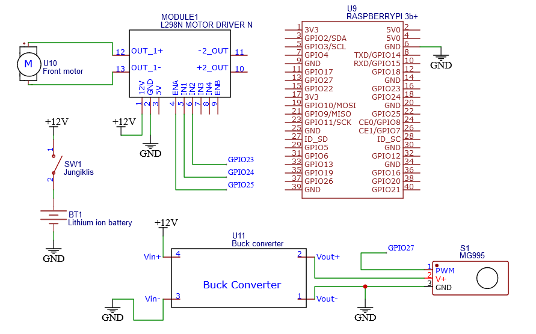
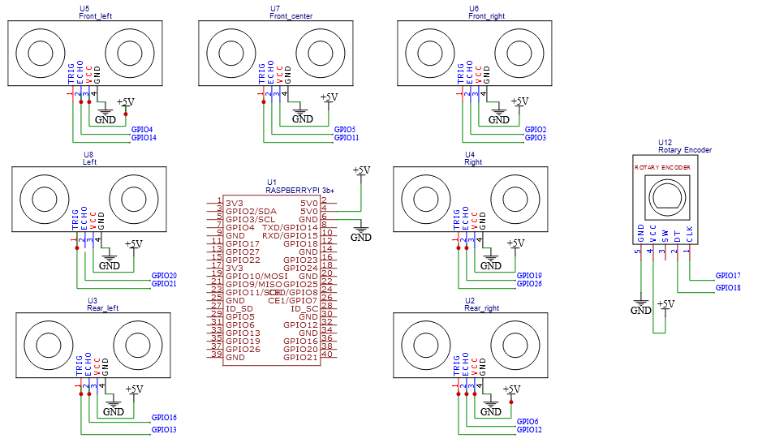
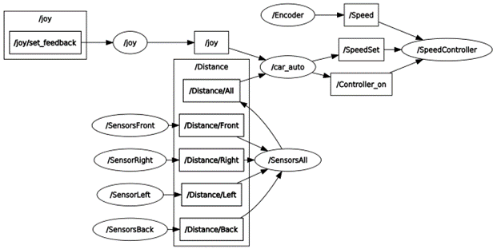
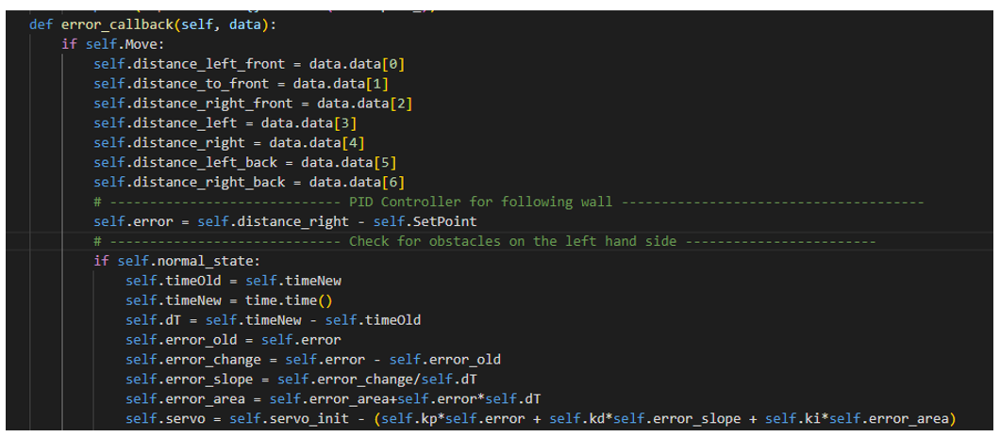

Using 7 ultrasound sensors, Raspberry Pi 3B+, servo motor for steering and a cheap car chassis, autonomous wall tracking
robot was built. For easier operation, robot operating system (ROS) was used. Using ROS, robot can be controlled from the outside source
like PS4 joystick as well as turned on for automatic mode.
There were two motors in the chassis, one for front wheel drive, other for rear wheel drive. Using both motors is good for high speed, but
in this case agility and precision is needed more, that's why only front wheel drive was chosen for this project. For speed and direction
control L298N motor drive was used. It is controlled with 3 GPIO outputs of raspberry pi, 2 of digital outputs for direction and 1 PWM output for
speed control. Drive is powered by 3 lithium ion batteries which make a total voltage of over 12V.
In order to have steering control, servo motor MG995 was used. It was mounted into chassis and used instead of previous steering
motor. It is powered with an output of 5V from buck converter, which was powered from 12V battery array. Servo position is controlled
with a PWM signal from the raspberry pi GPIO pin.
Motors were wired and mounted on the chassis so testing could begin. ROS node for testing with a joystick was written, here's an
example of how you should not test your hardware:
For anyone wondering, how the schematic looks, here it is down below:

7 Ultrasound sensors were used for collision avoidance. Custom fittings were 3D printed so the sensors could be mounted on
the chassis and be oriented correctly.
Here's how a 3D model of the front sensors mounted looks like:
In order to have a stable speed control, encoder can be used. In this specific case, rotary encoder KY-040 was used. It was
mounted on the rear axis and specific 3D parts had to be printed like gears and holders for it to be used efficiently.
Here are some schematics for connecting these sensors:

Software was written for use with ROS Kinetic, using ROS improves scalability of the project. For this reason raspberry pi was running Ubuntu 16.04 version.
To sum up the algorithm quickly, robot was using a PID controller for side wall tracking, robot had to maintain a set distance between a side sensor and a wall.
Front and back sensors were used for collision avoidance.
ROS Node and Topic Topology for system:

Example of tracking wall:
Code snippet for PID controller:

Other not mentioned parts